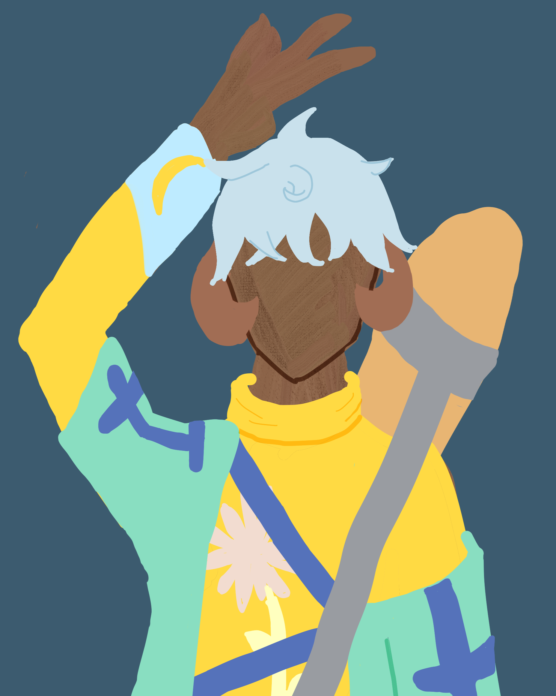
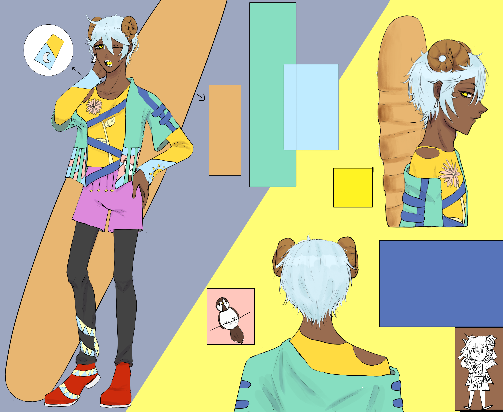
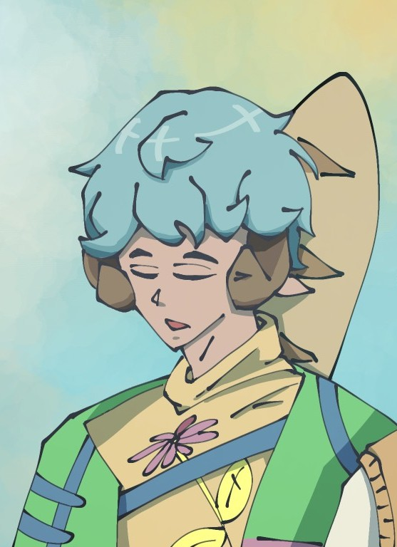
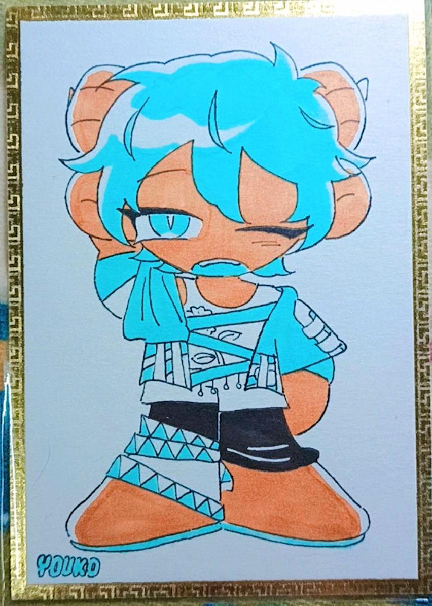
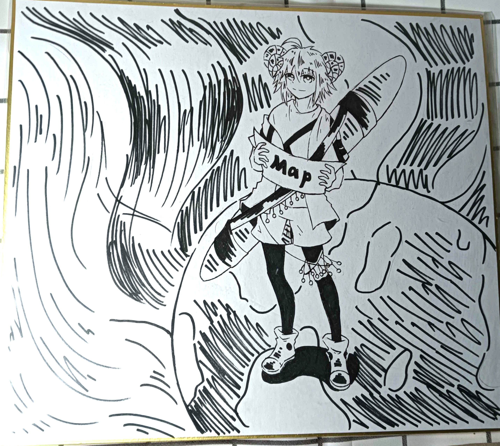

Vosto全域資料庫
Vosto全域資料庫
「生活方便，無可挑剔，很好。」
崔塵喜歡在各個地方探險，就算是被開發到面目全非的地方，也會踏足，很喜歡蒐集物品，除了賺取金錢外，也是他的癖好。
| 崔塵 | |
|---|---|
 |
|
| 姓名 | 崔塵 |
| 生日 | 5月9日 |
| 年齡 | 37歲 |
| 性別 | 男 |
| 身體資訊 | 173公分 | 67公斤 |
| 愛好 |
收集各種奇幻或復古的東西 威士忌 爵士樂 |
該條目正在施工中。
皮膚較為黝黑，頭上有著一對咖啡色的山羊角，雖然是羊卻有著一口尖牙。明黃色虹膜，永遠懶散的眼神，下垂的眼角使他看起來更為慵懶，並非想睡，而是生來如此。左耳有一個白色三角形耳釘，薄薄的嘴唇，因不愛喝水而有點干裂。
一頭淡藍色俐落短髮，極度嚴重的自然捲，東翹西翹的，梳也梳不好（許多人誤會他不梳頭髮），雖然是翹的，但非常的柔順，毛質非常好。重大場合會特別使用髮膠，雖然看上去有點好笑，有嘗試過燙直，但是過一陣子又復原，而且翹的更糟糕。
為了抬起特殊的法國麵包，並當作武器，所以手臂較有肌肉，短短的尾巴，毛色隨頭髮是淡藍色的，他不希望有人觸碰，所以基本上看不到。
是一隻吃葷食的羊，可以投喂花朵，但不要牧草，這讓他感覺受到挑釁。
服裝：
．鵝黃色的長袖。中間的圖案是一個滿版的花，長袖最後有一塊藍色的區域，右手是月亮的圖案，左手是太陽。
．草綠色外套。袖子長度只有半隻手臂，外套下半部有類似柵欄的樣子左邊有一隻被關著站在木頭往下望的麻雀，右邊是延伸過去的木頭，外套有靛藍色的寬扁繩連接，袖子上也有，最下面的繩子吊著幾顆黃色的球，外套不會完全穿好，露出一邊的肩膀。
．一件全黑的束口運動長褲，再套上紫色的短褲子。褲子右邊最下面有一條藍黃相間的三角型圖案繩子直接纏繞到鞋子上。鞋子是紅的布鞋，兩隻外側都有一顆地球的圖案。
．旅行時，常備一條可以背的巨大的法國麵包和他身高差不多，在特別的地方購買，旅行時特別好用，可以當作武器或是食物，非常耐饑，而攻擊人也很痛，
自戀到病態的程度，對自己的一切深深著迷，關於東西的擺放位置非常執著，每個物品都有一個完美的位置，而且物品擺在“正確”的位置上才能顯現出他們的美感，甚至到有點強迫症。對於自己的物品有著絕對的佔有慾，物件被觸碰會感覺奇怪與彆扭。
被問起第一印象時，通常人們會回答可靠。想做的、被託付的事情會親自去做，對他而言，交付給人總有一種不放心的感覺，總是擔心他人是不是弄的不好或是失敗，不然就是看不慣別人拖拖拉拉的而自己全部搶過來完成。親手完成讓人很有成就感。
無法容忍有人在他做事情時，打擾或是將事情量增加，喜歡先將所有事情完成再來放鬆。偶爾會像小孩子，其實是希望好好的被關注，只是時間點不對。
不會去太在意事情，認為發生就發生了，解決就好。不喜歡爭執，隨遇而安是他貫徹的使念。
感情方面：喜歡自己追求，積極且有點急性，但願意百分之百的貢獻，變各種不同的東西逗人開心，即使沒那麼好笑。但似乎只有三分鐘熱度，一直沒追求到，會覺得無聊而離開。
不是對方無聊，而是追求的這個過程。即使沒成功也會紳士的退場。
「他的背景一直是個謎。」但他確實是聯邦居民。
他很注重不破壞當地環境的潛規則，不管是原始之地或是失落之地。
崔塵煮的食物能吃，但不算好吃，就是普通，只有自己很滿意。
小冒險號會酷似機假的原因：車子的受力面積大，很容易造成地形的破壞，而機械下肢配合手臂是目前最能減少受力的方法。材料是他在各個星球撿來的，透過正規管道根本買不到，而黑市又是天價，流動的快速。
來自53星系，目前人在到處旅行，但常去星系1。
安斯艾爾是他的朋友，久沒見面，會透過郵件往來。
蔚曲是他們兩人一起發現的龍，默認彼此關係是朋友，正在教對方說話。
🖼️夏霧羽

🖼️慍冬子

🖼️YOUKO

🖼️遺失
